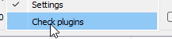
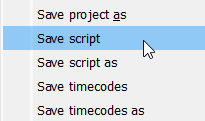
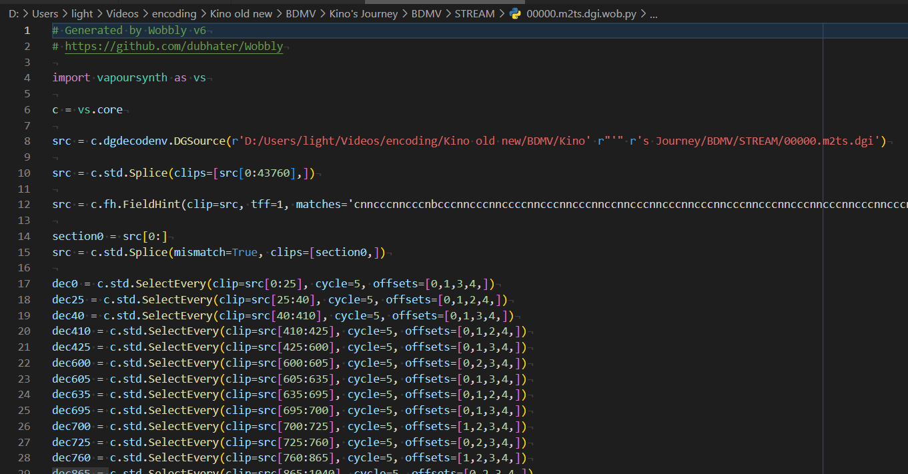

The IEW Guide to Wobbly
Learn how to use Wobbly, the Vapoursynth manual IVTCing tool. This guide covers the basic use-cases, recommend settings, and how to use Wobbly so you can perform IVTC to your heart’s content.
To start reading, you can click on the arrow on the right or press your → key to go to the next page, or you can browse the page index on the left.
The project is hosted on Github.
Getting started
New to Wobbly or IVTC/Deinterlacing in general? Check out our [quick primer][primer] to get a basic understanding of the relevant topic and theories.
Contributing
Spot a typo or problem with the guide? Want to contribute to Wobbly? Check the contribute section!
Disclaimers
This guide may not always be entirely up-to-date with what newer commits offer. Programs may be in constant development, so if something is outdated or there are any errors in this book, please contact us!
This is neither a Vapoursynth nor a filtering guide. This book explains how to use a Vapoursynth tool, but figuring out how to make use of the output is up to you.
A Primer on Telecining
When working on DVDs, you will no doubt come across a fairly annoying artifact: combing.

Virtually every DVD has these, and in some cases you may even find them on Blu-rays!
What you’re seeing here is called telecining. It’s very common for digital anime to be produced at a constant 23.976 frame/s However, old analog TVs would always broadcast video at 29.97 frame/s. This became a problem for anything that wasn’t that exact framerate, such as a lot of movies and TV series, and, indeed, most anime.
Telecining Patterns
In order to fit within that constraint, telecining patterns were conceived. For regular anime framerates, there are four frames of the original animation (also known as FILM) for every five frames of 29.97 frame/s video, as shown with the following simple equation:
$$ \frac{23.976}{29.97} = \frac{4}{5} $$
To deal with this, many studios have been exploiting the interlaced nature of 60Hz video. In interlaced video, every frame is split up into two incomplete images, also known as fields. Each field takes up either the even or odd rows of a frame. By abusing how this works, studios have been able to fit 23.976 video into 29.97 by splitting each frame up into fields and duplicating them as necessary.
To achieve a clean 23.976 → 29.97 frame/s conversion, 4 frames must be represented as 10 fields. This is done by duplicating fields following a set pattern. Assuming each frame in a cycle is labelled alphabetically, you get frames A, B, C, and D. When telecining, the fields of these frames will often alternate like so:
$$ \frac{A - A - B - B - B - C - C - D - D - D}{2 - 3 - 2 -3} $$
This telecining operation is called 3:2 pulldown, and is the most common form of telecining there is for anime.

Other forms of pulldown exist, but those are rarely used in any kind of video source you’ll end up using when encoding anime. The only exception may be PAL DVDs, but due to the nature of trying to fit 23.976 → 25 being so difficult, these will often be a lot harder to undo (and more crucially, Wobbly does not currently offer support for these kinds of patterns).
Telecining vs. Interlacing
Interlacing and telecining are often mixed up in common vernecular. However, it’s very important to understand the differences between the two prior to filtering, and to be able to diagnose which frames make use of which.
Interlacing is, in essence, the combing-like artifact you see, even with telecining. The difference is that with a fully interlaced video, there are no fields to match together. Every field is unique, so the proper way to handle these is to deinterlace them and double the temporal resolution.
Telecining follows a predictable pattern and is used to convert a lower framerate into a higher one (using for example the aforementioned 3:2 pulldown). Certain frames may be interlaced, but you are not required to deinterlace them. Because the video was originally of a lower framerate and a consistent pattern has been applied to increase it, the original frames can be nigh-losslessly restored.
When deinterlacing, what you’re doing is splitting up the video frames into fields and interpolating them up into full frames. Every field is half the vertical resolution of the video, so when deinterlacing a frame you’re effectively throwing out half the vertical resolution and trying to recreate what it may have looked like. With telecined content, this does more harm than trying to reconstruct the original frames by matching the fields and is thus not preferable unless you’re dealing with post-processing that broke the pattern.
Cycles and Pattern Breaking
When Inverse Telecining (also known as IVTC), it helps a lot to think of the video in terms of cycles. Within a telecined 29.97 frame/s video, assuming the source video is 23.976 frame/s, each cycle will be five frames long. Post-IVTC, that cycle must be reduced to four frames.
However, patterns will often break in anime, as it’s not uncommon for studios to be editing 60i footage directly. This means that any splices made during that process may result in the cycle being broken, and will result in orphan fields being created.
Orphan fields are fields with no pairing field available to reconstruct the original frame with. They’re an artifact leftover from improper splicing and trimming, and can by nature no longer be losslessly restored. The most common method to handle those is to duplicate the previous frame. This, however, has the drawback of creating a small “hiccup” during playback if the scene has a lot of motion prior to the scenechange.
60i and Variable Framerate Footage
In the early digital era, a lot of studios were still experimenting with digital tooling. This included working directly on 60i video, as well as mixing different framerates together.
A common example of editing done on 60i video is interlaced credits. When checking each individual field, sometimes you may notice that certain elements are unique in each field. These are hard-interlaced, and must be deinterlaced. This may not always be straight-forward however, as with for example interlaced credits, the underlying video is still 23.976 frame/s content, and deinterlacing may cause a lot of damage to it. There’s various different ways to handle deinterlacing such content, and the most common cases will be handled on their own pages.

In some rarer instances, certain animations or effects may also be animated at 29.97 frame/s. These will often play back completely fine on 60i video, and appear progressive. This may also extend to certain effects such as panning shots, zooms, background animations, or even video effects or CGI elements. In order to properly preserve those, you must output a Variable Framerate (VFR) clip or store frame time information in an external file and mux those into the video container after encoding. This means the scenes that are telecined must be marked as 23.976 frame/s post-IVTC, and the scenes that are animated at 29.97 frame/s must be marked as 29.97 frame/s. Any deinterlaced scenes where the temporal resolution has been increased must be marked as 59.94 frame/s.
Additional Learning Resources:
Limitations
Before you get started, it’s important to be aware of the limitations that come with Wobbly. No software is perfect, and this holds true for Wobbly as well.
5-Frame Cycles Only
Wobbly is limited to 5-frame cycles. This means it can only ever be used for NTSC content (such as Japanese or North-Americans DVDs, see this wikipedia page for more information), and will not work on PAL/SECAM video.
This also includes variable telecine cycles. Wobbly always assumes a clean 3:2 Pulldown algorithm was applied to the input clip, and no support is currently given for other patterns.
Deinterlaced Footage
Wobbly has no support for footage that was deinterlaced or pre-fieldmatched. Deinterlacing comes in many shapes and sizes, the most common of which is through filters such as YADIF (found in FFMpeg). These are destructive by nature and will not give Wobbly anything to work with. Another common example of deinterlaced footage is footage with blended fields (which often matches the original telecining pattern, such as AABBA).

Similarly, content that has its fields already matched and only requires decimation are not currently supported in Wobbly. It relies on knowing the fieldmatches to determine how a clip should be decimated. It simply does not know what to do with progressive content.
“True” VFR
Wobbly does not currently support true VFR. Decimation is strictly based on the telecine cycle, meaning that VFR ranges get rounded. This is a side-effect of Wobbly only supporting a very limited number of framerates (6, 12, 18, 24, 30).
Similarly, Wobbly does not currently allow you to easily output 59.94 frame/s video. This can become an issue when you must deinterlace a scene and want to make use of the timecodes provided by Wobbly.
Decimation Breaks
This is a regression from YATTA.
Due to the way footage was commonly edited during the early digital era, a lot of editing was done on telecined footage. This means you may get splices that results in extra frames being left in, ruining the decimation cycle. Wobbly will simply set it to a wrong framerate, whereas YATTA would automatically determine this was the case and add a decimation by itself. We cover how to do this manually in the Fixing the Framerate section, but it’s something that should honestly be done automatically.
Installation
To install Wobbly, you must first navigate to its download page. The recommended version as of writing this guide is the Setsugennoao fork, release v6-R2.
You can download the release by opening up the list of Assets and clicking on the zip file. It should start downloading Wobbly now.
To continue, you must now unpack this zip file. Make sure you unpack it in a place you’re sure it won’t be moved from in the future! The easiest place to put it is in your Documents directory.
Dependencies
Wobbly has the following dependencies:
You can verify it can find the plugins by opening Wobbly, hovering over the “Tools” dropdown menu at the top of the window, and clicking on “Check plugins”.

This will open up a window displaying the plugins it was able to find.

Indexing with Wibbly
For Wobbly to do its job, you first need to create a JSON file for it to read and write to. This file should contain source information, trims, matches, and many other metrics. This is where Wibbly comes in. Wibbly will run over a given file and gather the necessary metrics for wobbly to work properly.
Loading Videos
Wibbly consists of two main windows:
- The jobs window
- The video output window

The main jobs window is where you create metric collecting “jobs”. You can drag video and specific indexing files into this window, and by clicking on them you can choose which metric gathering operations you’d like to perform.

You also open up different windows from this main window. It’s recommended you select every window so you can easily adjust settings on the fly. The state and geometry get stored in an ini file and will persist when you open up wibbly again next time.
The video output shows a very simple output of the given video file. You can framestep or jump to a specific frame or time. When you first open up Wibbly, this window will be empty. To load a video, we first need to drag a video file into the jobs window.

Wibbly accepts the following inputs:
- Common video formats L-SMASH-Works can read (such as m2ts, mkv, etc.)
- DGIndexNV indexing files
- d2v indexing files
For most DVDs, it’s highly recommended you use DGIndexNV. This will consistently be the most accurate, and also allow you to easily disable soft telecining if necessary. DGIndeNV requires an NVidia GPU, so if you don’t have one, you can use D2vWitch. How to use either program is outside of the scope of this guide.
For Blu-ray files, DGIndexNV will still give you the most accurate results. However, you can also opt to use L-SMASH-Works instead. It will use L-SMASH-Works by default if you drag an m2ts or mkv file into the jobs window.
Gathering Metrics
Once you’ve indexed a video file, the video will show in the Video Output window.

Before you begin, it’s a good idea to double-click on the current job inside the Jobs window to ensure it properly applies any settings you set to the Job. The first two things you want to do is trim and crop the video as necessary.
When trimming, be aware that the trims are inclusive. This means that if you trim frames 0–100, frame 100 will be included in the trimmed clip. If you’re working with TV caps, you’ll want to make sure you trim out only the actual episode and ignore all the sponsorcards and advertisements. With DVDs, you may have indexed multiple episodes at once. Trim out only the episode you want to work on, and ignore the others. If you want to work on the other episodes, make sure you give each output file a unique name so you don’t accidentally overwrite them with the next metrics gathering!
[//] <> (TODO: fact check what the proper mod is for the cropping section.)
Cropping is done to get rid of the black bars on the sides of the video. Keeping those may mess with the metric gathering, so it’s safer to remove them. With YUV420/YV12 video, the final output image must be mod4, so you may need to crop slightly more to get rid of all the black bars. The Video Output window will update as you select crops, so you can see whether a crop is being applied properly immediately.
[//] <> (TODO: More testing with the interlaced fades setting)
Next, you select the threshold for interlaced fades detection. Interlaced fades are fading effects applied to a video that was telecined to 29.97 frame/s. These fades will be 29.97 frame/s as well, but the underlying animation will often be 23.976 frame/s, so we must pull them down. To determine a healthy threshold, locate an interlaced fade in your video and adjust the threshold until it catches the entire fade. Don’t make the threshold too low, or else it may catch non-fades by accident!
Finally, you want to select the metrics to gather. These can be selected in the VFM window. You can leave most of these settings alone, but make sure you always tick “Enable DMetrics”. If your video is Bottom-Field-First, set “order” to “0”. Furthermore, if your source has a different telecining pattern for the chroma, untick “Chroma” in this menu as well.
Running Your Jobs
Once you’ve set all the settings and prepared your jobs as best you can, it’s time to execute them. In the Jobs window, you can select which operations to perform per job. To switch jobs, simply click on the job you want to change settings for inside the Jobs window.
It’s recommended you gather metrics for every single option available. The only exceptions may be trimming or cropping if they’re not performed, or interlaced fades if you are absolutely certain there are none. This may speed up the metric gathering a bit, but it’s still safer to check for everything.
Once you’ve made your choices and made sure everything is correct, click on the “Engage” button. A new window will pop up and show the estimated time until each job is done.

Once this is done, you will have a “wob” file in the location you’ve told it to save it (by default next to the source file). This file is simply a JSON file and contains all the metrics Wibbly has gathered for you. These will be read and modified by Wobbly.
Writing your own Wibbly
Wibbly, currently, is extremely slow. This is why it might not be a bad idea to write your own implementation or to use someone else’s. This page will explain what metrics Wibbly gathers, how to parse them, and how to make sure you have a Wobbly-compliant JSON file by the end of it.
Existing Implementations
TODO: write my own implementation and link it in here.
Metrics
TODO: Explain which metrics are gathered and how to parse them.
Output File
TODO: Explain how to format the output file.
Using Wobbly
Wobbly’s job is to act as a GUI to easily adjust fieldmatches. It makes use of the metrics collected by Wibbly to prepare a clip, and can process those to IVTC a clip.
To get started, grab the “wob” JSON file you generated using Wibbly (or any other metrics gathering tool designed for wobbly) and drag it into the Wobbly window.
Familiarizing Yourself with the UI
Wobbly can be a bit difficult to work around for beginners. This is because it’s primarily built to work with keybinds. This is a lot faster than pressing a button on-screen for every single operation, and considering how many actions you must perform, this will save you a lot of time and effort.
A list of keybinds can be found under the Settings tab.

Here is a quick table containing the relevant keybinds:
| Key | Action |
|---|---|
| Left Arrow | Jump 1 frame back |
| Right Arrow | Jump 1 frame forward |
| Ctrl + Up Arrow | Jump to next section |
| Ctrl + Down Arrow | Jump to previous section |
| Ctrl + Shift + Up Arrow | Jump to next frame with high mic |
| Ctrl + Shift + Down Arrow | Jump to previous frame with high mic |
| Up Arrow | Jump to next frame with high dmetrics |
| Down Arrow | Jump to previous frame with high dmetrics |
| Shift + Up Arrow | Jump to the next combed frame |
| Shift + Down Arrow | Jump to the previous combed frame |
| I | Start new section at current frame |
| Ctrl + Q | Delete current section |
| S | Cycle the current frame’s match |
| Ctrl + S | Cycle through different patterns for the current section |
| D | Toggle decimation for the current frame |
| G | Jump to a specific frame (opens submenu) |
| Ctrl + F | Replace current frame with previous frame (freezeframe) |
| Shift + F | Replace current frame with next frame (freezeframe) |
| Ctrl + Z | Undo |
| Ctrl + Y | Redo |
| F5 | Toggle preview mode (Source ↔ Preview) |
| Ctrl + Num + + | Zoom in |
| Ctrl + Num + - | Zoom out |
| (Not bound by default) | Save Project |
These will be the shortcuts you’ll use most, so the sooner you can familiarize yourself with them, the better. You can always adjust them in this menu to your liking.
Make sure you don’t accidentally spam Ctrl + S to save the project! This is by default bound to “Cycle through different patterns for the current section”. It may be worthwhile to replace this keybind if you’re scared you’ll accidentally cycle through sections instead of saving.
Processing the Clip
The first order of business is to make sure you process the project. Wobbly makes use of Wibbly’s metrics to make its decisions, but it depends on the scenechanges being correct. Before you do anything else, you’ll want to jump from section to section and make sure every section starts and ends on an actual scenechange.
The following keybinds will be your new best friends while correcting scenechanges:
| Key | Action |
|---|---|
| Left Arrow | Jump 1 frame back |
| Right Arrow | Jump 1 frame forward |
| Ctrl + Up Arrow | Jump to next section |
| Ctrl + Down Arrow | Jump to previous section |
| I | Start new section at current frame |
| Ctrl + Q | Delete current section |
| Ctrl + Z | Undo |
The most straight-forward way to do this
is to simply press Ctrl + Up Arrow
and jump forwards until you find the start of a new section
that is clearly not on a scenechange.

You then delete this section by pressing Ctrl + Q,
and rinse and repeat.
You may sometimes find scenechanges being skipped.
To fix those,
you use the Left Arrow and Right Arrow to framestep,
locate the first frame of the scene change,
and press I on your keyboard.
It’s important for the processing to occur on sections that are larger than 10 frames. If you have for example a lot of flickers, it’s probably worthwhile to just create one larger section containing all of them, rather than a lot of smaller sections, as that may introduce issues during the processing. A simple way to look at it is that every section equates a scene, with a cut made on the start and end of it.
When dealing with fades to and from scenes, you’ll want to put the scene change somewhere in the middle. The first frame before a fade in is usually the best, unless it fades in from a solid colour with a clear scenechange. To deal with crossfades (that is, two scenes that fade into each other without a solid color inbetween) where the pattern differs between scenes, you can try creating a new section that captures just the fade. Wobbly may be able to accurately decimate that for you. If the pattern remains the same, there is no reason to do this.
You follow these procedures throughout the entire clip, creating and deleting sections as necessary. Once you’re done, you can finally process the clip. Navigate to the Pattern Guessing window.

You’ll want to make sure you are using “From mics+dmetrics” with an Edge Cutoff of 1 frame. It’s not recommended you adjust the Minimum Length. For patterns, you’ll only want to select “CCCNN”. For decimation, pick “First duplicate”. Then finally, click “Process project” (and make absolutely sure to NOT press that button again, as this will ruin your project file). It will return a list of problem sections like this:

Fixing the Failures
There are two kinds of pattern guessing failures:
- Section too short
The section is too short for the guessing method. This is defined by the “Minimum length” setting. To fix this, double-click on the failed pattern guess in the list, adjust the section so it’s larger than or equal to the minimum length, and then click “Process current section”. If you did this properly, it should remve the section from the list.
- Ambiguous pattern
Indicates that Wobbly was unable to find the correct pattern. There can be multiple reasons behind this, but it most often means that you either did not set your section correctly, or that section can not be IVTC’d properly.
For every ambiguous pattern,
you’ll want to manually fix the pattern.
You can do this by double-clicking the failed guess in the list,
and then cycle through the pattern using Ctrl + S by default.
Note that this won’t remove the section from the list.
If you have a section that you are sure is 29.97 frame/s,
you can adjust the pattern in the “Pattern editor” window.
Set it to 30 fps and press Ctrl + S.
You’ll also want to apply this to any scene that requires specific post-filtering in your script.
This can be for example 59.94 frame/s credits on top of 23.976 frame/s video
(which is very common for Opening and Ending themes),
or scenes you can’t match properly
and must be pulled down to 23.976 frame/s.
Make sure you set it back to 24 fps
after you’ve dealt with every known 29.97 frame/s scene!
Fixing the Framerates
Now that you’ve made most of your matches, navigate to the “Frame rates” window. It’s easiest to go one frame rate at a time. First, select the “30p” checkbox.

A list of useful keybinds for this section:
| Key | Action |
|---|---|
| Left Arrow | Jump 1 frame back |
| Right Arrow | Jump 1 frame forward |
| D | Toggle decimation for the current frame |
Handling 30p Scenes
29.97 frame/s framerates can show up for a couple reasons:
- You set a section to 29.97 frame/s yourself
This should be done on any scenes that are native 29.97 frame/s or 59.94 frame/s, or requires pulldown of some kind (overlaid 29.97 frame/s credits on 23.976 frame/s content, for example).
- Pattern changes on scenechanges leave you with an extra frame

This is not an uncommon occurrence, as with anime the editing is often done on the telecined video. The easiest fix for this is to simply decimate one of the extra frames. This ensures you keep a constant frame rate. This option is especially easy to take if the final frame in a section has an orphan field, as the easiest way to fix those is to drop it anyway. Another option is to keep that section 29.97 frame/s, though you may cause desyncs during timing/subtitle syncing with other subtitles this way.
Whichever option you choose, it pays dividends to be consistent. One such consistency you can take is to always drop the frame with an orphan field if possible (these will almost always be marked as B matches, so they’re easy to spot), and otherwise, drop the frame before a scene change if there is one. This is especially useful when IVTCing recurring clips, such as Opening or Ending themes, midcards, etc.
Handling 18p Scenes
Once you have fixed all the wrong 30p sections, we move on to 18p. 18p is basically always going to be incorrect. As such, there should be 0 instances of 18p cycles left once you’re done with IVTCing.
Usually 18p scenes happen because of awkward pattern changes across scenes (or if you’re unlucky, within the same scene), or because an orphan field gets dropped which breaks the framerate. This means that in certain situations, you may be forced to restore a duplicated frame to ensure you still have a consistent framerate. This is why it’s recommended you apply the same consistency rule as with 30p scenes, but some of it in reverse. You restore orphan fields if possible, but at scenechanges, you restore the first frame of a scene if necessary (unless one scene has a pan and the other does not). This is because a “stutter” at the end of a scene is easier to spot than a stutter at the very start of a scene. If the 18p cycle occurs elsewhere, use your best judgment. Generally speaking, you can’t really go wrong if it’s for example in the middle of a scene.
Handling 12p and 6p Scenes
12p and 6p, simply put, only occur when you’ve made a mistake with manual decimations. You can simply fix them and then handle them as you would 18p framerates once you restore enough frames.
By the end of this, you should have a list of 29.97 frame/s scenes you manually and knowingly set this way.

Cleaning Up
Useful keybinds for this section:
| Key | Action |
|---|---|
| Left Arrow | Jump 1 frame back |
| Right Arrow | Jump 1 frame forward |
| S | Cycle the current frame’s match |
| D | Toggle decimation for the current frame |
| Ctrl + F | Replace current frame with previous frame (freezeframe) |
| Shift + F | Replace current frame with next frame (freezeframe) |
Leftover Combing
Finally, after matching scenes and forcing framerates, you still want to deal with leftover combing. Open the “Combed frames” menu.

Before you do anything, click “Refresh”. This will perform another search through the clip to find any remaining combed frames. This may take a couple of minutes to finish.

You can now double-click on all the found combed frames,
or jump to the next combed frame using .
For any combed frame,
you can press S to cycle through fieldhints.
If every cycle returns a combed frames,
consider adjusting the decimated frame
(using D to swap between decimated and not,
making sure you don’t ruin the framerates you just fixed),
or pulling it down in your filterchain later.
Another thing to take into account is that this will also find telecined fades. You typically do not want to perform fieldmatching on the fade itself, but just the underlying animation. If the caught combed frame is caused by the fade, ignore it and process it with a filter meant to deal with those in your filterchain later.
Freezeframing
If you find scenes of a duplicated clip
(that was not decimated due to being animated on twos/threes/fours)
that has very heavy compression artifacting,
it might be worth it to freezeframe it with either the next frame
(Shift + F)
or the previous frame
(Ctrl + F).
You can adjust these later in the “Frozen frames” window.
This usually won’t be applicable or worth it
unless you’re dealing with very starved video
and heavy MPEG2 blocking.
Your clip should now be ready to be used in your own filterchain!
Making Use of the Wobbly Output
There are two straightforward ways to make use of the clip you’ve just fixed up in Wobbly.
From Wobbly Itself
Within Wobbly’s “Project” dropdown menu, you can save a script. This will output a “vpy” file next to the Wobbly JSON file.


You can simply stick the contents of this script into your own script and work from there.
Usin an External Tool
TODO: I would describe vswobbly here... IF I’D FINISHED WRITING IT!
Want to contribute? Caught a topic we should’ve reaaaalllyyyy caught ourselves but didn’t? Leave an Issue (or heck, even a PR!) on the GitHub repo and we’ll check it out!
Please make sure you use Semantic Line breaks in your PRs.
If you get rid of them in your PR,
I will rid you of your spine.
The only currently accepted English dialect is American English.
We currently do not accept PRs for very minute changes. Please write an Issue instead.
Notable Contributors
Guide:
- LightArrowsEXE (Primary author)
- Zewia (Proofreader, knows the ins and outs better than I do)
Development:
- Myrsloik (YATTA and Wobbly developer and creator)
- Setsugennoao (Current Wobbly maintainer)
- arch1t3cht (Added the undo keybind, the best update Wobbly has ever received (real and factual))
Disclaimer
Accountability for content
The contents of our pages have been created with the utmost care. However, we cannot guarantee the contents’ accuracy, completeness or topicality. According to statutory provisions, we are furthermore responsible for our own content on these web pages. In this matter, please note that we are not obliged to monitor the transmitted or saved information of third parties, or investigate circumstances pointing to illegal activity. Our obligations to remove or block the use of information under generally applicable laws remain unaffected by this as per §§ 8 to 10 of the Telemedia Act (TMG).
Accountability for links
Responsibility for the content of external links (to web pages of third parties) lies solely with the operators of the linked pages. No violations were evident to us at the time of linking. Should any legal infringement become known to us, we will remove the respective link immediately.
Privacy Policy
-
This page does not store any of your data by itself.
-
This project is hosted on GitHub.
GitHub may store information about your visit in the form of log files. Read the privacy policy of GitHub for further information.